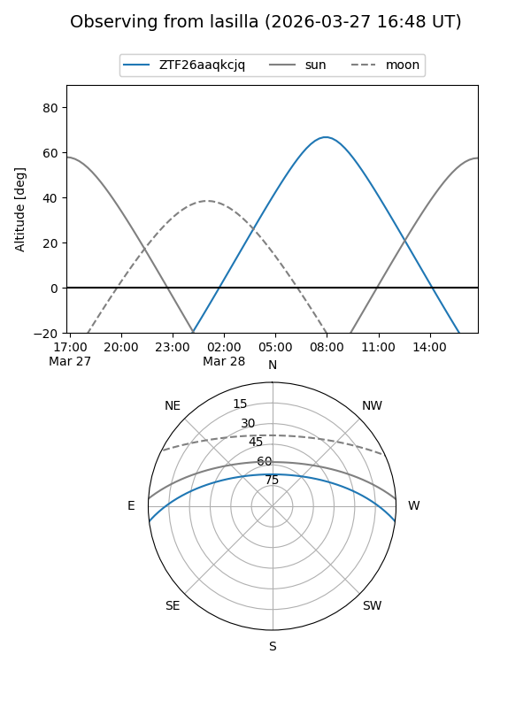
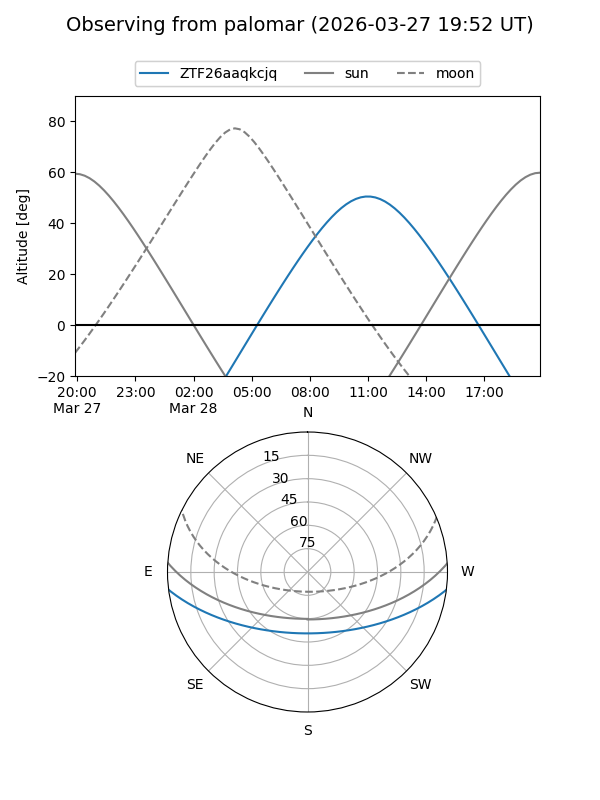

ZTF26aaqkcjq
Target ZTF26aaqkcjq at 2026-03-27 13:40
Aliases and brokers:
FINK: link
Lasair: link
ALeRCE: link
alt names
ZTF26aaqkcjq (ztf,fink_ztf)
Coordinates:
equatorial (ra, dec) = 233.5761,-6.01968
equatorial (HMS+DMS) = 15:34:18.27,-06:01:10.83
galactic (l, b) = (358.9641,+38.53724)
Flags:
Photometry:
last ztfg=17.79
1 ztfg detections
Lightcurve
Visibility


Additional plots